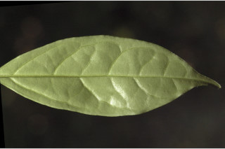
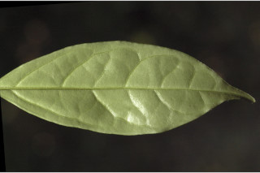
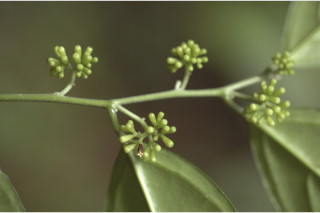
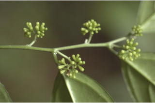

Trees up to 5 m tall.
5 ಮೀ. ಎತ್ತರದವರೆಗಿನ ಮರಗಳು.
5 മീറ്റര് വരെ ഉയരമുളള മരങ്ങള്.
மரங்கள், 5. உயரம் வரை வளரக்கூடியது
Young branchlets terete, puberulous.
ಎಳೆಯ ಕಿರುಕೊಂಬೆಗಳು ದುಂಡಾಗಿದ್ದು ಸೂಕ್ಷ್ಮ ಮೃದು ತುಪ್ಪಳದಿಂದ ಕೂಡಿರುತ್ತವೆ.
ലഘുരോമിലമായ, ഉരുണ്ട ഇളം ഉപശാഖകള്.
சிறிய நுனிக்கிளைகள் குறுக்குவெட்டுத் தோற்றத்தில் வளையமானது, உரோமங்களுடையது.
Leaves simple, alternate, distichous; petiole 0.7-1.2 cm long, glabrous, canaliculate; lamina 8-15.5 x 1.5-6 cm, variable in shape oblong to elliptic-oblong, bluntly narrow acuminate to caudate - acuminate, base acute to slightly rounded, margin entire, membranous to chartaceous, glabrous; midrib canaliculate above; secondary_nerves 5-6 pairs, looped; tertiary_nerves obscure.
ಎಲೆಗಳು ಸರಳವಾಗಿದ್ದು ಪರ್ಯಾಯ ಜೋಡನಾ ಮಾದರಿಯಲ್ಲಿರುತ್ತವೆ ಮತ್ತು ಕಾಂಡದ ಎರಡೂ ಕಡೆ ಎದುರು ಬದರಿನ ಸಾಲಿನಲ್ಲಿರುತ್ತವೆ;ತೊಟ್ಟುಗಳು 0.7 -1.2 ಸೆಂ.ಮೀ. ವರೆಗಿನ ಉದ್ದವಿದ್ದು ಕಾಲುವೆ ಗೆರೆ ಸಮೇತವಿರುತ್ತವೆ;ಪತ್ರಗಳು 8-15.5X1.5-6ಸೆಂ.ಮೀ.ಗಾತ್ರ ಹೊಂದಿದ್ದು ಚತುರಸ್ರದಿಂದ ಅಂಡವೃತ್ತ- ಚತುರಸ್ರದವರೆಗಿನಆಕಾರದಲ್ಲಿದ್ದು (ಆಕಾರದಲ್ಲಿ ವೈವಿಧ್ಯತೆ ಹೊಂದಿರುತ್ತವೆ), ಮೊಂಡಾದ ಸಂಕುಚಿತವಾದ ಹಾಗೂ ಕ್ರಮೇಣ ಚೂಪಾಗುವ ಮಾದರಿಯಿಂದ ಬಾಲರೂಪಿ- ಕ್ರಮೇಣ ಚೂಪಾಗುವ ರೀತಿಯವರೆಗಿನ ತುದಿ, ಚೂಪಾದುದರಿಂದ ಸ್ವಲ್ಪ ಮಟ್ಟಿಗೆ ದುಂಡಾದ ಬುಡ ಮತ್ತು ನಯವಾದ ಅಂಚನ್ನು ಹೊಂದಿರುತ್ತವೆ; ಮೇಲ್ಮೈ ಪೊರೆ ಯ ಮಾದರಿಯಿಂದ ತೊಗಲನ್ನೋಲುವ ಮಾದರಿಯಲಿದ್ದು ರೋಮರಹಿತವಾಗಿರುತ್ತದೆ;; ಮಧ್ಯನಾಳ ಪತ್ರದ ಮೇಲ್ಭಾಗದಲ್ಲಿ ಕಾಲುವೆ ಗೆರೆ ಸಮೇತವಿರುತ್ತದೆ;ಎರಡನೇ ದರ್ಜೆಯ ನಾಳಗಳು ಅಂದಾಜು 5-6 ಜೋಡಿಗಳಿದ್ದು ಕುಣಿಕೆಗೊಂಡಿರುತ್ತವೆ;ಮೂರನೇ ದರ್ಜೆಯ ನಾಳಗಳು ಅಸ್ಪಷ್ಟ.
ലഘുവായ ഇലകള്, ഏകാന്തരക്രമത്തില്, തണ്ടിന്റെ രണ്ടുഭാഗത്ത് മാത്രമായടുക്കിയതാണ്; ചാലുളള, അരോമിലമായ ഇലഞെട്ടിന് 0.7 സെ.മീ മുതല് 1.2 സെ.മീ വരെ നീളം; പത്രഫലകത്തിന് 8 സെ.മീ മുതല് 15.5 സെ.മീ വരെ നീളവും 1.5 സെ.മീ മുതല് 6 സെ.മീ വരെ വീതിയും, ആകൃതി ആയതാകാരം തൊട്ട് ദീര്ഘവൃത്തീയ ആയതാകാരം വരെ പലവിധത്തിലാവാം; പത്രാഗ്രം മുനപ്പില്ലാത്ത ദീര്ഘാഗ്രംതൊട്ട് വാലുളള ദീര്ഘാഗ്രം വരെയാകാം, പത്രാധാരം നിശിതം തൊട്ട് ചെറുതായി വൃത്താകാരത്തിലോ ആവാം, അരികുകള് അവിഭജിതം, സ്തരീരം തൊട്ട് കടലാസ് പോലത്തെ പ്രകൃതം, അരോമിലം; മുഖ്യസിര മുകളില് ചാലുളളതാണ്; വളയംതീര്ക്കുന്ന 5 ഓ 6 ഓ ജോഡി ദ്വിതീയ ഞരമ്പുകള്; ത്രിതീയ ഞരമ്പുകള് അപ്രസക്തമാണ്.
இலைகள் தனித்தவை, மாற்றுஅடுக்கமானவை, இருநெடுக்கு வரிசையிலையடுக்கம் (டைஸ்டிக்கஸ்); இலைக்காம்பு 0.7-1.2 செ.மீ. நீளமானது, உரோமங்களற்றது; இலை அலகு 8-15.5 X 1.5-6 செ.மீ., வடிவத்தில் வேறுபாடுடையது, நீள்சதுரம் முதல் நீள்வட்டம்-நீள்துர வடிவானது, அதிக்கூரியதுடன் முனை மழுங்கியது முதல் வால்-அதிக்கூரியது, அலகின் தளம் கூரியது முதல் வட்டம் போன்றது, அலகின் விளிம்பு முழுமையானது, ஜவ்வு போன்றது முதல் சார்ட்டேசியஸ், உரோமங்களற்றது; மையநரம்பு மேற்புறத்தில் அலகின் பரப்பைவிட பள்ளமானது; இரண்டாம் நிலை நரம்புகள் 5-6 ஜோடிகள், விளிம்புகள் இணைந்தது; மூன்றாம் நிலை நரம்புகள் தெளிவற்றவை.
Flowers white, in axillary short cymes.
ಹೂಗಳು ಅಕ್ಷಾಕಂಕುಳಿನಲ್ಲಿನ ಕಿರಿದಾದ ಮಧ್ಯಾರಂಭಿ ಪುಷ್ಪಮಂಜರಿಯಲ್ಲಿರುತ್ತವೆ ಹಾಗೂ ಬಿಳಿ ಬಣ್ಣ ಹೊಂದಿರುತ್ತವೆ.
വെളുത്ത പൂക്കള്, കുറിയ കക്ഷ്യ സൈമുകളിലുണ്ടാകുന്നു.
மலர்கள் வெள்ளை நிறமானவை, இலைக்கோணங்களில் சிறிய சைம் வகை மஞ்சரியில் காணப்படுபவை.
Drupe, cylindric-oblong; seed 1.
ಡ್ರೂಪ್ಗಳು ವರ್ತುಲ ಸ್ಥಂಭಾಕೃತಿಯ ಅಂಡವೃತ್ತ ಆಕಾರದಲ್ಲಿರುತ್ತವೆ; ಬೀಜ 1.
ഒറ്റവിത്തുളള കായ, സ്തംഭീയ-ആയതാകാരത്തിലുളള ഡ്രൂപ്പ് ആണ്.
உள்ளோட்டுத்தசைகனி (ட்ரூப்), உருளை-நீள்சதுர வடிவானது; விதை ஒன்றுடையது.


 

 
